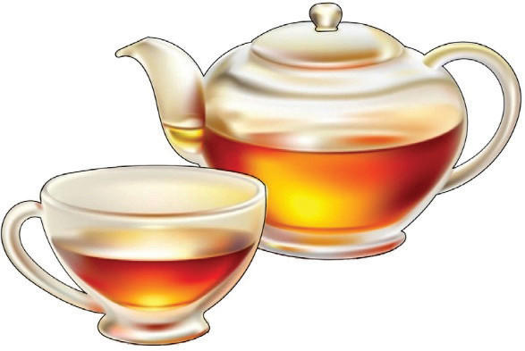

Figure 5.7: Black tea
Coffee
Ingredients (Serve 1 person)
- 1 tablespoon ground coffee
- 1 tablespoon sugar or honey (optional)
- 500 ml of water
Method
- 1. Warm up a coffee jug and then add coffee.
- 2. Pour boiling water into the jug. Never allow coffee to boil because it speeds up caffeine extraction, which may result in a bitter taste.
- 3. Allow the coffee to stand for 10 minutes for the aroma to infuse.
- 4. Strain the coffee into a warmed coffee pot.
- 5. Serve coffee with milk or sugar (optional).
Figure 5.8 shows a cup of coffee.
Figure 5.8: Coffee
104